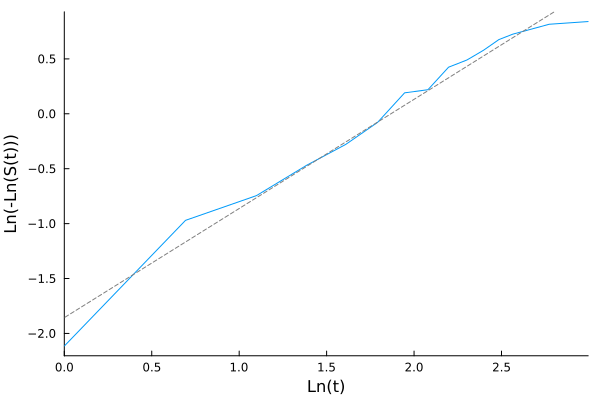
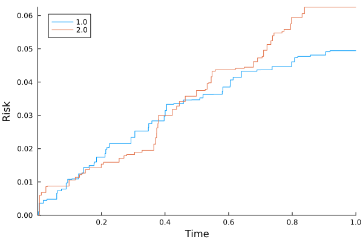

Non-parametric survival/risk estimation with plotting
cd("docs/src/examples/fig/")
using Random, LSurvival, Distributions, LinearAlgebra, Plots
# generate some data under a discrete hazards model
id, int, out, data = LSurvival.dgm(MersenneTwister(1212), 100, 20)
data[:, 1] = round.(data[:, 1], digits = 3)
d, X = data[:, 4], data[:, 1:3]
wt = rand(MersenneTwister(1212), length(d)) # random weights just to demonstrate usage
# Kaplan-Meier curve
mfit = kaplan_meier(int, out, d, wts = wt, id = ID.(id))Output:
Kaplan-Meier Survival
────────────────────────────────────────
time survival # events at risk
────────────────────────────────────────
1 1.0 0.886358 5.73763 50.4885
2 2.0 0.684543 10.3561 45.4832
3 3.0 0.622066 3.30175 36.1763
4 4.0 0.534651 4.26077 30.3209
5 5.0 0.469165 2.652 21.6518
6 6.0 0.396423 3.57466 23.0554
7 7.0 0.298113 5.09531 20.5463
8 8.0 0.287853 0.388946 11.3009
9 9.0 0.216842 3.24547 13.156
10 10.0 0.195417 0.965415 9.77109
11 11.0 0.167813 1.43976 10.1925
12 12.0 0.140082 0.998202 6.04051
13 13.0 0.126733 0.58481 6.13692
14 16.0 0.10436 0.867046 4.91143
15 20.0 0.0986266 0.270987 4.93256
────────────────────────────────────────
Number of events: 43.7388
Number of unique event times: 15Plot survival curve
Kaplan-Meier estimator of the cumulative risk/survival
plot(mfit)
savefig("km.svg")
Checking whether marginal distribution of the outcome comports with a parametric Weibull or Exponential model
- a straight line implies Weibull
- a flat line implies Exponential (a special case of Weibull)
lognlogplot(mfit)
savefig("lognlog.svg")
Competing event analysis: Aalen-Johansen estimator of cumulative risk
using Random, LSurvival, Distributions, LinearAlgebra
# simulate some data
z, x, t, d, event, wt = LSurvival.dgm_comprisk(MersenneTwister(122), 1000)
X = hcat(x,z)
enter = t .* rand(length(d))*0.02 # create some fake entry times
res_aj = aalen_johansen(enter, t, event; wts = wt);
res_ajKaplan-Meier Survival, Aalen-Johansen risk
─────────────────────────────────────────────────────────────────────────────────────
time survival # events (j=1) # events (j=2) at risk risk (j=1) risk (j=2)
─────────────────────────────────────────────────────────────────────────────────────
1 0.0022 0.998931 0.159 0.0 148.803 0.00106852 0.0
2 0.0038 0.996398 0.5814 0.0 229.219 0.00360225 0.0
3 0.0054 0.990389 0.0 1.8427 305.564 0.00360225 0.00600876
4 0.0111 0.989562 0.0 0.4837 579.421 0.00360225 0.00683553
5 0.0174 0.988695 0.781 0.0 891.278 0.00446938 0.00683553
6 0.0254 0.986939 0.0 1.7696 996.153 0.00446938 0.00859189
7 0.0288 0.986575 0.3667 0.0 994.383 0.00483333 0.00859189
8 0.0298 0.986399 0.0 0.1767 994.017 0.00483333 0.00876726
9 0.0595 0.984609 1.8042 0.0 993.84 0.00662402 0.00876726
10 0.061 0.983885 0.7293 0.0 992.036 0.00734786 0.00876726
─────────────────────────────────────────────────────────────────────────────────────
...
──────────────────────────────────────────────────────────────────────────────────────
time survival # events (j=1) # events (j=2) at risk risk (j=1) risk (j=2)
──────────────────────────────────────────────────────────────────────────────────────
97 0.7976 0.895918 0.0 1.9207 904.596 0.0446602 0.0594221
98 0.798 0.894475 1.4537 0.0 902.676 0.046103 0.0594221
99 0.8072 0.893263 1.2212 0.0 901.222 0.0473151 0.0594221
100 0.815 0.89315 0.1138 0.0 900.001 0.047428 0.0594221
101 0.8174 0.892868 0.2843 0.0 899.887 0.0477102 0.0594221
102 0.8309 0.891727 0.0 1.1494 899.603 0.0477102 0.0605629
103 0.8386 0.889767 0.0 1.9746 898.453 0.0477102 0.0625227
104 0.8572 0.889355 0.4151 0.0 896.479 0.0481222 0.0625227
105 0.9051 0.888361 1.0021 0.0 896.064 0.0491168 0.0625227
106 0.9189 0.888032 0.3315 0.0 895.062 0.0494458 0.0625227
──────────────────────────────────────────────────────────────────────────────────────
Number of events (j=1.0): 46.8371
Number of events (j=2.0): 58.4336
Number of unique event times: 106Aalen-Johansen plot: marginal cause-specific risks
plot(res_aj)
savefig("aj.svg")